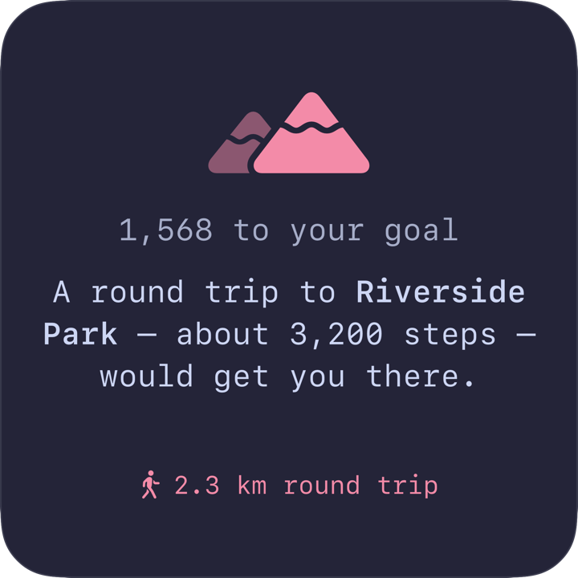
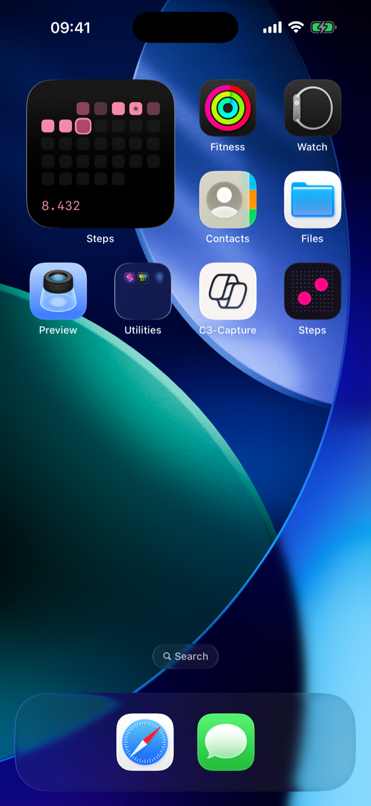
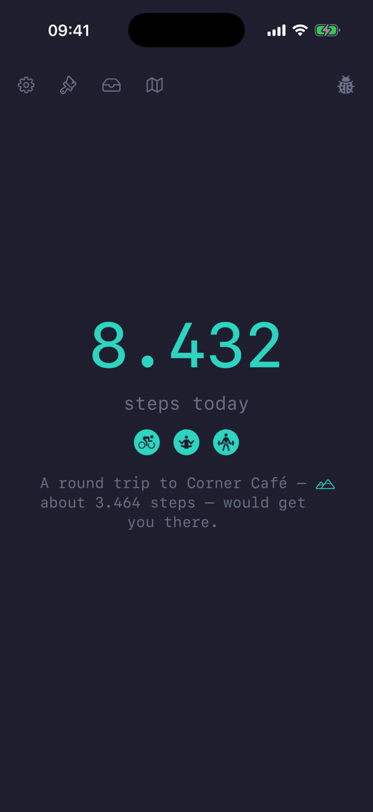
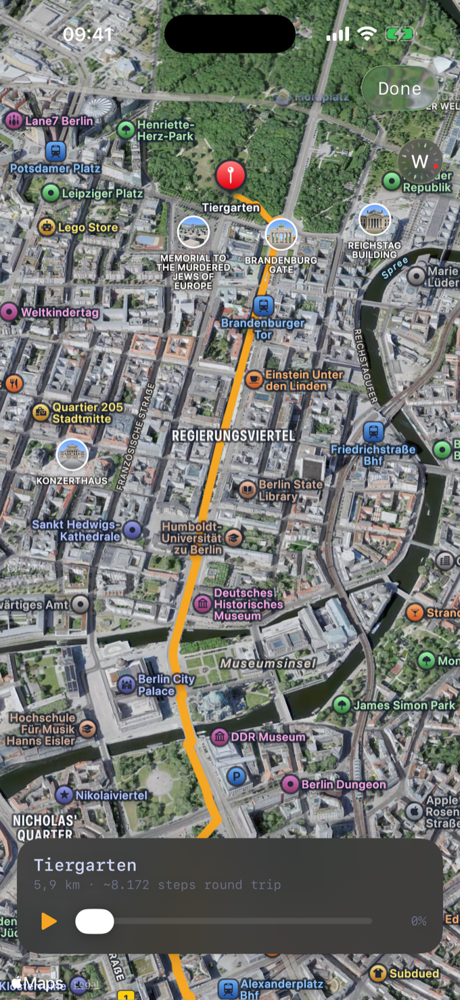
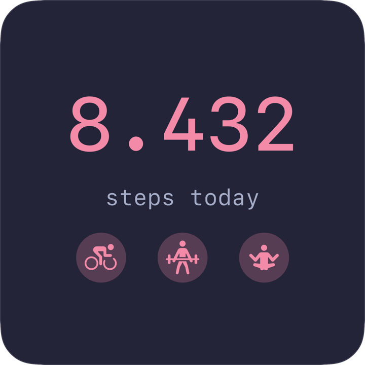
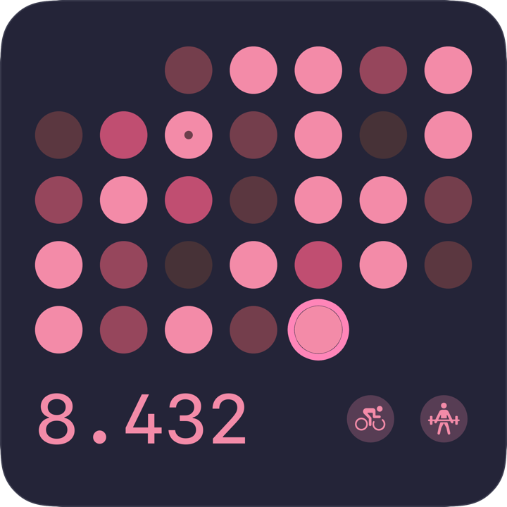
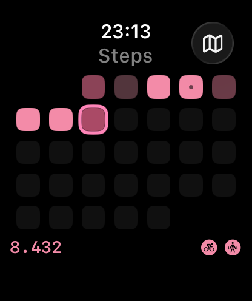
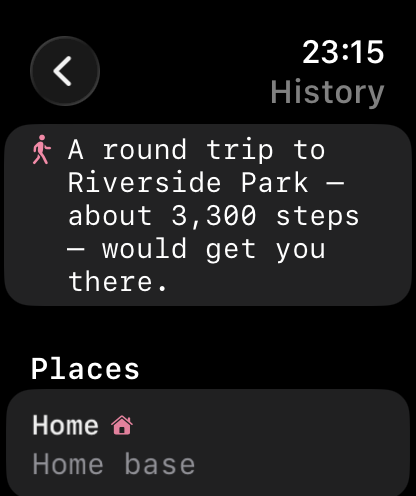

Suggested walk
Short of 10,000? A real round trip closes the gap, flown in 3D.
Not just a step counter. But also suggesting the walk to reach your 10.000 today.
Also badges, a grid and watch app. You're welcome.




Short of 10,000? A real round trip closes the gap, flown in 3D.

Rides, strength, and mindful minutes each add a badge by the day's count.

Twelve palettes, tunable curves, and day shapes — the grid, painted your way.


Grid, count, and badges on watchOS — places a tap from Maps directions.